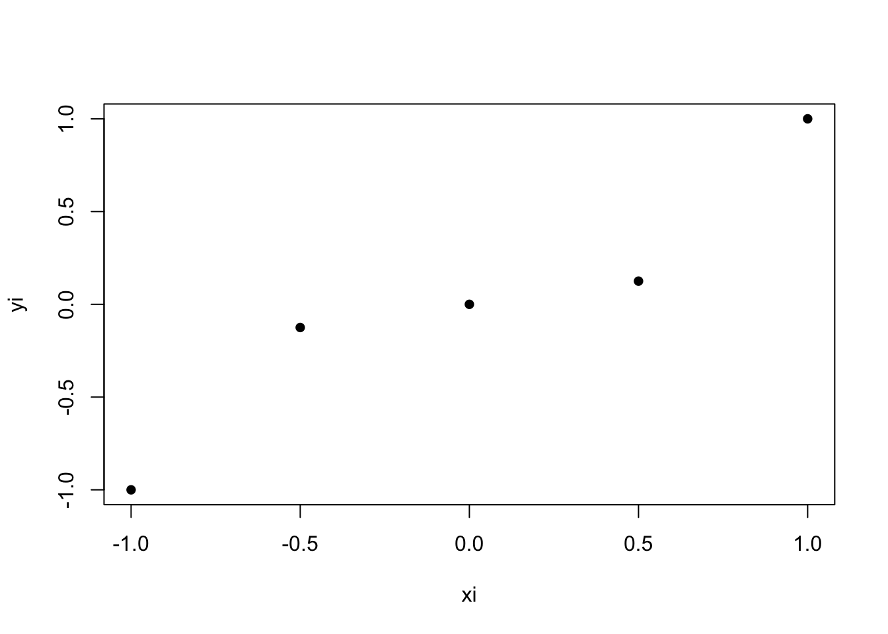

Activity: Motivating Gaussian quadrature
The goal of this activity is to motivate where the nodes and weights for Gaussian quadrature come from.
Part 1
Suppose we observe \(n\) points \((x_1, y_1),...,(x_n, y_n)\). For example, here are \(n=5\) points from the polynomial function \(y = x^3\):
Now let
\[L_{n,i}(x) = \prod \limits_{k : k \neq i} \frac{(x - x_k)}{(x_i - x_k)}\]
This function \(L_{n,i}(x)\) is a polynomial, and it turns out that \(L_{n,i}(x)\) plays an important role in deriving Gaussian quadrature. To begin, let’s explore some properties of \(L_{n,i}(x)\).
Question: Show that \(L_{n,i}(x_i) = 1\)
Question: Show that \(L_{n,i}(x_k) = 0\) for all \(k \neq i\)
Now let
\[q(x) = \sum \limits_{i=1}^n y_i L_{n,i}(x)\]
\(q(x)\) is also a polynomial.
- Question: Using the results from questions 1 and 2, calculate \(q(x_1),...,q(x_n)\).
Plotting \(q(x)\)
The following code produces the plot shown above, and provides a function q to plot \(q(x)\) between -1 and 1:
# calculate q at a single point
# x: point to evaluate q(x)
# xi: the points x1,...,xn
# yi: the points y1,...,yn
q_helper <- function(x, xi, yi){
lp <- sapply(1:length(xi),
function(i){prod((x - xi[-i])/(xi[i] - xi[-i]))})
sum(yi*lp)
}
# calculate q at a vector of new points
# x: point to evaluate q(x)
# xi: the points x1,...,xn
# yi: the points y1,...,yn
q <- function(x, xi, yi){
sapply(x, function(t){q_helper(t, xi, yi)})
}
xi <- seq(-1, 1, length.out = 5)
yi <- xi^3
plot(xi, yi, pch=16)
x <- seq(-1, 1, 0.01)
lines(x, q(x, xi, yi))Question: Run the code to add \(q(x)\) to the plot with the five points \((x_1, y_1),...,(x_n, y_n)\). What do you notice about \(q(x)\)?
Question: To your plot from question 4, add the curve \(y = x^3\) (the original function from which the \((x_i, y_i)\) were sampled). Comment on \(q(x)\) vs. \(x^3\).
Another example
The following code samples \(n=4\) points \((x_1, y_1),...,(x_n, y_n)\) from the 7th degree polynomial
\[f(x) = 10(x^7 - 1.6225x^5 +0.79875x^3 - 0.113906x)\] and plots both the true polynomial \(f(x)\) (in red) and the polynomial \(q(x)\) (in black):
f <- function(x){
10*(x^7 -1.6225*x^5 +0.79875*x^3 - 0.113906*x)
}
n <- 4
xi <- seq(-1, 1, length.out=n)
yi <- f(xi)
plot(xi, yi, pch=16, xlab="x", ylab="y")
x <- seq(-1, 1, 0.01)
lines(x, q(x, xi, yi))
lines(x, f(x), col="red")Question: Comment on \(q(x)\) vs. \(f(x)\).
Question: Now rerun the code with \(n=5, 6, 7,\) and \(8\) nodes. For each \(n\), compare \(q(x)\) to \(f(x)\).
Key points
Question: What does the function \(q(x)\) do?
Question: Why is the number of points \(n\) important?
Part 2
Previously in class, we found that the “best” two-point rule to approximate the integral of \(f\) was
\[\int \limits_{-1}^1 f(x) dx \approx w_1 f(x_1) + w_2 f(x_2)\]
with \(x_1 = -1/\sqrt{3}\), \(x_2 = 1/\sqrt{3}\), and \(w_1 = w_2 = 1\).
Where do these weights come from? By using the polynomial interpolation \(q(x) = \sum \limits_{i=1}^n f(x_i) L_{n,i}(x)\), we argued that
\[w_i = \int \limits_{-1}^1 L_{n,i}(x) dx\] 10. Question: For the two-point rule, we have points \(L_{2,1}(x) = \dfrac{x - x_2}{x_1 - x_2}\) with \(x_1 = -1/\sqrt{3}\), \(x_2 = 1/\sqrt{3}\). Show that
\[\int \limits_{-1}^1 L_{2,1}(x) dx = 1\]